Project / 017
Kashi Model
Capture → Model → Make
- Category
- Heritage
- Material
- Resin
- Dimensions
- 320 × 210 × 180 mm
- Build time
- 41 h
Complete


Tvashta Labs · The Digital Forge
A digital forge for products, services and experiences — we capture what exists, imagine what doesn’t, prototype what could be, and make what comes next.
The Forge Environment
You have entered an infinite architectural space built from planes, lines, circles and grids. It is calm and premium—ivory ground, geometry in regal green, deep teal and antique gold. A place where ideas are continuously being shaped.
The Tvashta Process
Enter anywhere
A project does not have to pass through every stage. The system is flexible, not restrictive.
A heritage project
Begins at Capture — a structure scanned before it is lost.
A startup
Begins at Imagine — a concept with no form yet.
An STL file
Begins directly at Make — already drawn, ready to materialise.
01
Station 01 / Capture
Temples, monuments, sacred architecture, cultural artefacts, physical spaces.
A scanned architectural structure sits at the centre. Watch it move through the transformation—from the real thing to a cloud of points, to a digital model, back to a physical replica.
02
Station 02 / Imagine
Ideas, sketches, concepts, product design, experiments.
The object here has not settled. Lines appear and disappear. Geometry shifts between several possible forms. You are looking at something before it has decided what it is.
03
Station 03 / Prototype
Product development, hardware, functional prototypes, iteration, engineering.
A partially assembled object. Toggle it between concept, CAD, prototype and revision—each pass separates its parts and puts them back a little truer.
04
Station 04 / Make
3D printing, digital fabrication, custom manufacturing, production, physical objects.
The object emerges from layers. One deposited line at a time, a form that was only data a moment ago becomes something you could hold.
Interactive Object System
Drag inside the frame to turn the object. Rotation is the resting state; the other four are the moves we make on your work every day.
The Digital Tools
Captures the physical world.
Imagination and conceptualisation.
Precision.
Geometry and proportion.
Additive manufacturing.
Physical existence.
The Material Library
The goal is to make fabrication feel tactile—even on a screen. New materials are added as Tvashta expands.
Rigid · matte · everyday form studies
Fine detail · smooth · heritage replicas
Sintered · load-bearing · brackets & parts
Fired · warm · vessels & objects
Composite · grained · tactile surfaces
Projects as Artefacts
Project / 017
Capture → Model → Make
Complete
Project / 024
Imagine → Prototype → Make
In production
Project / 031
Imagine → Prototype
Testing revision C
The Forge Journal
Main Conversion
What are you bringing to the Forge?
You bring the idea — Tvashta finds the process
Describe what you have in mind. We work out whether it starts at Capture, Imagine, Prototype or Make—and what it takes to get there.
Your idea is on the workbench.
A maker will pick it up, map it to the process, and come back with the shortest path from here to a real object.
Final Product Statement